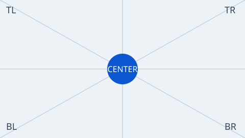

申請の下書き
境界のある面です。中のボタンは Button のままです。
Gallery
部品一覧へ一致する部品がありません。別の言葉で探してください。
Series で Design Language を体験し、Tokens で名前と値と見た目を調べます。部品のクラスは、どのシリーズでも同じです。
部品を見る
入力、印、面、結果、Dialog、案内。シリーズを切り替えてもクラスは同じです。
並びと流れを見る
Pattern はボタンの並び、Experience は申請の一歩です。どちらも Button だけです。入力は Controls にあります。
シリーズを切り替える
Soft、Dense、Technical、Editorial、Playful、M3 Expressive、DADS、Apple、Spectrum、Fluent 2、Carbon。クラス名を出さずに選べます。
場面で見る
選んだシリーズの特徴と用途、Button の場面例が下に出ます。部品の見た目も同じになります。
名前を選ぶと、下の場面例と Button、Pattern、Experience がそのシリーズの見た目になります。ボタンのクラス自体は変わりません。クラス名は詳細にあります。
Baseline は追加クラスなし。部品のクラスはどのシリーズでも同じです。
DADS は デジタル庁デザインシステム の公開されている色・角丸・文字・ボタンの性格を解釈したものです。公式のボタンは、塗り、アウトライン、テキストの3種類です。ここにある薄い塗りと浮かせは、既存の種類を残したもので、公式の3種類には入りません。ロゴや公式ファイルは含みません。Web フォントは読み込みません。端末に Noto Sans JP があればそれを使い、なければ日本語のゴシック体で近づけます。
Apple は、今の画面に近づけた解釈です。システムフォント（-apple-system、 BlinkMacSystemFont）だけを使い、SF Pro のファイル、SF Symbols、ロゴ、公式 CSS は含みません。
Spectrum は業務画面向けの解釈です。Express の装飾は入れていません。公式の CSS やフォントファイルは含みません。
Fluent 2 は shapes と typography の本文だけを使います。ボタンの角は 4px、大きいボタンは 8px です。Segoe UI のファイルや公式アイコン、公式 CSS は含みません。
Carbon は IBM Carbon の white テーマです。塗りは #0f62fe、角は直角、高さは 32 / 40 / 48px です。IBM Plex のファイルや公式アイコン、公式 CSS は含みません。
M3 Expressive で角ばった静止形にするときは
andm-btn--shape-asymmetric
です。
シリーズを切り替え、用途ごとの文字と実際の表示値を比較できます。見出しの見た目とHTMLの見出し階層は別に選びます。
選ぶ、その先へ。
今日を少し面白く
新しいプロジェクト
使う人が、自分のペースで目的を達成できる。文字の階層と余白は、その体験を支えます。
2026年10月8日 · 編集できます
プロジェクト名
変更は保存するまで反映されません。
const idea = "まず触ってみよう";
シリーズごとの対応と出典を見る
独自の線画15種。公式アイコンの再配布ではありません。記号と操作名を分けて扱います。
大きさ
装飾は aria-hidden="true"。単独で意味を伝えるSVGには role="img" と aria-label。配布用 dist/icons.svg の symbol を use href で参照できます。
通常・強調・アウトライン・選択・無効。操作名を持ち、アイコンとは別にタッチ領域を確保します。
操作すると結果がここに出ます。
本文内のリンク、外部リンク、長いURL。訪問済み色は独立したトークンで指定できます。
入力の名前。for と id を関連付け、クリックすると入力へ移動します。
入力方法や条件を伝える小さな文章。aria-describedby で入力に関連付けます。
他の人に表示する名前です。あとから変更できます。
色だけでなく文章で問題と直し方を伝えます。例を操作して、エラーの表示と解除を試せます。
表示だけでは必須入力になりません。入力の required とセットで使います。
色付きの印とテキスト。読み取り専用で、押せるボタンにはしません。
本文中の短いコードと、横スクロールできるコードブロック。
クラス名は andm-text です。
<p class="andm-text andm-text--title">世界を少し面白く</p>
const projectName = "途中のアイデアも残しておこう";
ショートカットの案内。見た目はキーですが、操作ボタンではありません。
⌘ + S で保存
Esc で閉じる
自然な比率・正方形・横長。意味のある画像には説明、装飾には空のaltを指定します。

ブラウザ標準のファイル選択。選択済み・無効・複数ファイルに対応します。この見本ではアップロードしません。
端末からファイルを選びます。
未選択
既存Text fieldを使う検索・メール・数値・日付・時刻・色。ピッカーの内部表示はブラウザとOSの標準です。
Density の Global Token はありません。高さの差は Series の remapping です。
Character は傾向。Pattern は Trigger と Effect。Token は速度と曲線。数値は computed style です。
申請内容を確認してから保存します。
変更を保存しますか。
3 件を選択中です。
job #184 は停止しています。
この章はここまでです。
下書きができました。
新しい機能を試しますか。
ラベル付きは横長の pill です。押すと角が立ちます。角ばった静止形も選べます。
入力した内容を確認しました。この内容で申請しますか。
手続きで迷わず押せることを優先しています。ロゴや公式ファイルは含みません。
この設定を保存しますか。
公式ページの本文が取れないため、色・角丸・余白・高さ・影は入れていません。使っているのはシステムフォントだけです。
選択した項目を更新します。
Spectrum 2 の公開値です。塗りは blue-900、角は高さの半分、境界は 2px です。Express は使っていません。
この変更を保存します。
ボタンの角は 4px、大きいボタンは 8px です。色や影は、参照したページの本文に無かったので入れていません。
この変更を適用します。
white テーマです。塗りは #0f62fe、角は直角です。ボタンの既定の高さは 48px で、ここの中サイズは 40px です。
いま使える部品です。先に場面の中で見て、そのあと単体で見ます。見た目は、上で選んだシリーズです。
申請内容を確認してから保存します。
andm-btn に、種類
andm-btn--filled /
andm-btn--outlined /
andm-btn--tonal /
andm-btn--elevated /
andm-btn--text、大きさ
andm-btn--sm /
andm-btn--md /
andm-btn--lg。アイコンは
andm-btn__icon。
部品の並びです。新しい部品は足していません。進む操作を右、やめる操作を左に置きます。
保存するか、やめますか。
画面の流れの一部です。Button だけで、申請の確認までを示します。
入力した内容を確認しました。この内容で申請しますか。
Series に所属しない UI も作れます。Global Token を優先し、Component 固有の意味は Component-local Token、名前を付ける必要がない値だけ Local Value にします。見本はまだ置いていません。
一行の入力です。複数行は同じ Control に andm-textfield--textarea を足します。高さはボタンの中サイズ、角は --andm-radius-md にフォールバックします。
andm-textfield、ラベル andm-textfield__label、入力
andm-textfield__input、補足 andm-textfield__helper、エラー
andm-textfield--error と andm-textfield__error、複数行
andm-textfield--textarea。
オンとオフを独立して切り替えます。
andm-checkbox、andm-checkbox__input、
andm-checkbox__label。
同じ名前の中から、一つを選びます。
andm-radio-group、andm-radio、
andm-radio__input、andm-radio__label。
すぐに効くオンとオフです。つまみの移動は状態変化、押下は色だけ短くします。
andm-switch、andm-switch__input、
andm-switch__label。入力は checkbox に role="switch"。
native の select です。開いた一覧の見た目はブラウザに任せます。
andm-select、andm-select__label、
andm-select__field、andm-select__native、
andm-select__chevron。
区切り線です。操作は持ちません。色は面上の文字を薄めたものです。
上の文章
下の文章
andm-divider、andm-divider--inset、
andm-divider--vertical。
短い印です。押す対象にはしません。
申請 #184 承認
andm-badge に andm-badge--info /
andm-badge--success /
andm-badge--warning /
andm-badge--error /
andm-badge--outline。info は既定と同じ、secondary container です。
面をまとめる Container はこれ一つです。境界線の面と、影だけの andm-card--raised。Panel や Surface は別クラスにしません。
境界のある面です。中のボタンは Button のままです。
影は --andm-shadow-1。別の部品ではありません。
andm-card、andm-card--raised、
andm-card__title、andm-card__body、
andm-card__actions。
結果をその場に残します。info はシリーズの secondary container。success / warning / error は状態色です。
確認してください
保存前に内容を読めます。
保存しました
申請の下書きを更新しました。
期限が近いです
今日中に提出してください。
保存できません
必須の項目が空です。
andm-alert に andm-alert--info /
andm-alert--success /
andm-alert--warning /
andm-alert--error。
確認や決定のためのnative dialogです。出現の動きはandm独自の既定で、各シリーズの公式時間ではありません。
andm-dialog、andm-dialog__panel、
andm-dialog__title、andm-dialog__body、
andm-dialog__actions。
同じ画面の中で、パネルを切り替えます。高さは各シリーズのボタン高さ、Carbon の選択ラベルだけ 600 です。それ以外のタブ専用の装飾は足していません。
andm-tabs、andm-tabs__list、
andm-tabs__tab、andm-tabs__panel。選択は
aria-selected="true"。
範囲の中から一つの値を選びます。塗り幅は --andm-slider-fill。つまみの押下は Button と同じ縮小率です。
andm-slider、andm-slider__label、
andm-slider__input、andm-slider__value。
操作の結果を伝えます。入場の動き・置き場所と通知の意味を分け、詳細な根拠は下の監査記録で確認できます。
保存しました
下書きを更新しました。
下書きです
まだ提出していません。
保存しました
下書きを更新しました。
期限が近いです
今日中に提出してください。
保存できません
通信が切れました。
andm-toast に andm-toast--info /
andm-toast--success /
andm-toast--warning /
andm-toast--error。しまうときは is-dismissed。並びは
andm-toast-region。
ホバーかキーボードフォーカスで短い説明を出します。Escapeで閉じ、説明へポインターを移動できます。配置と間隔は独自仕様です。
提出の前に 内容はあとから直せません してください。
andm-tooltip がトリガーを包み、説明は
andm-tooltip__bubble。配置は
andm-tooltip--top /
andm-tooltip--bottom /
andm-tooltip--left /
andm-tooltip--right。
現在位置までの階層を示します。現在地はリンクにせず、余白と字の役割はシリーズの値を継承します。
この内容で申請しますか。
andm-breadcrumb、andm-breadcrumb__list、
andm-breadcrumb__item、andm-breadcrumb__link、
andm-breadcrumb__current。
同じ一覧のページを切り替えます。現在ページと前後の移動を示します。各社の公式ページ構成そのものではありません。
全80件中、1〜20件を表示
andm-pagination、andm-pagination__control、
andm-pagination__list、andm-pagination__page、
andm-pagination__gap。
画面端に出すnative dialogです。開閉とフォーカスは標準のモーダル動作、移動の時間と幅は独自の既定です。
申請の一覧です。
andm-drawer、andm-drawer__panel、
andm-drawer__title、andm-drawer__body、
andm-drawer__actions。しまう途中は is-closing。
クリックで開く短い面です。上・下・左・右は Tooltip と同じ配置です。見本は箱の中に収め、説明は覆いません。
上に出します。
下に出します。
左に出します。
右に出します。
提出前に、担当へ共有できます。
andm-popover、andm-popover__panel、
andm-popover__title、andm-popover__body、
andm-popover__actions。配置は
andm-popover--top /
andm-popover--bottom /
andm-popover--left /
andm-popover--right。しまうときは is-closed。
行と列で情報を比較します。見出しと本文の文字ロールを分け、行高・余白の対応付けと未確認事項は監査記録に残しています。
| 申請 | 担当 | 状態 |
|---|---|---|
| 184 | 青木 | 確認中 |
| 185 | 井上 | 承認 |
andm-table。native の table です。
関連する情報を一覧にします。文字は用途別ロール、配置と余白は独自の共通仕様です。M3のdp値をWebの公式pxとは扱いません。
andm-list、andm-list__item、
andm-list__title、andm-list__meta。
見出しで本文を開くnative detailsです。内容の意味と開閉状態を保ち、動きの時間は独自の既定を使います。
担当と期限を見てから保存します。
必要なファイルはまだありません。
andm-accordion、andm-accordion__item、
andm-accordion__summary、andm-accordion__panel。
開閉は native の details です。
一時的な処理の進捗を示します。手続きのステップ位置とは分けます。4pxの線はandmの既定で、全シリーズの公式寸法ではありません。
andm-progress、andm-progress__label、
andm-progress__track、andm-progress__bar、
andm-progress__helper。幅は --andm-progress-value。
処理中を示す回転の印です。共通の周期は独自の800ms、Carbonは既存記録の690msを維持。DADSでは画面全体の処理中に使い、部分処理には静止した砂時計を使います。
読み込み中
andm-spinner。
読み込み前のレイアウトの骨格です。静止表示はandmの採用判断。DADSでは使用せず、プログレスインジケーターを選びます。
DADS はスケルトンを使わず、プログレスインジケーターを案内します。
andm-skeleton、andm-skeleton--block、
andm-skeleton--avatar。
人を表す印です。40pxの大きさと画像のクロップは独自仕様。名前や画像の代替文を添えます。
青 青木
andm-avatar。
同じ場で一つの値を選びます。選択状態はaria-pressedで伝えます。移動の時間は独自の既定です。
andm-segmented、andm-segmented__option。
選択は aria-pressed。
独立した絞り込みは button と aria-pressed。静的ラベルは別の Badge で示します。選択済みにはチェックを表示します。
操作しないラベルは分けて表示します。
andm-chip。選択状態は aria-pressed。切替処理は消費側が実装します。削除・入力チップは未実装。
主操作を強調するボタン。配置はアプリ側で決めます。
andm-fab と andm-fab--sm / --lg / --extended。アイコンだけの場合は操作名を aria-label に指定します。
ラベル・説明・エラーを関連付けます。
作品名で検索できます。
3件の作品
別のキーワードで検索してください。
適用するまで結果を変えず、条件をまとめて反映します。
すべて：3件
件数・適用条件・並び順をまとめます。並び替えが下の一覧に反映されます。
条件：すべて
保存中は二重送信を防ぎ、完了を通知します。サンプルでは通信・保存を行いません。
通常のボタングループ。Tabで各操作に移動し、実行結果を表示します。
項目全体をリンクにせず、見出しリンクと末尾操作を分けます。
観測記録を整理する試作・更新 2026年10月8日
初回の空状態と、検索結果なしを使い分けます。
読み込み中・完了を試せます。更新される領域にaria-busyを付けます。
準備できています
作品一覧
優先度は編集メモであり、部品の数値にはしない。
読み込み中